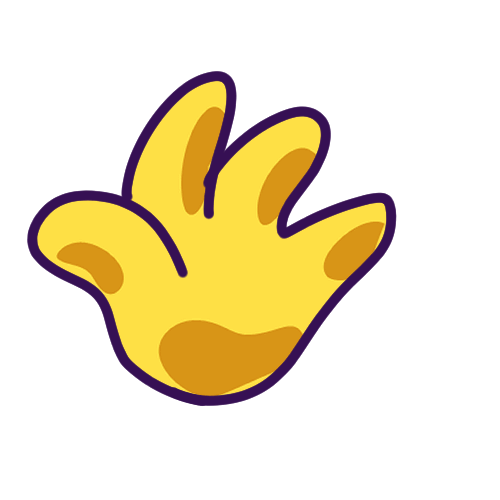
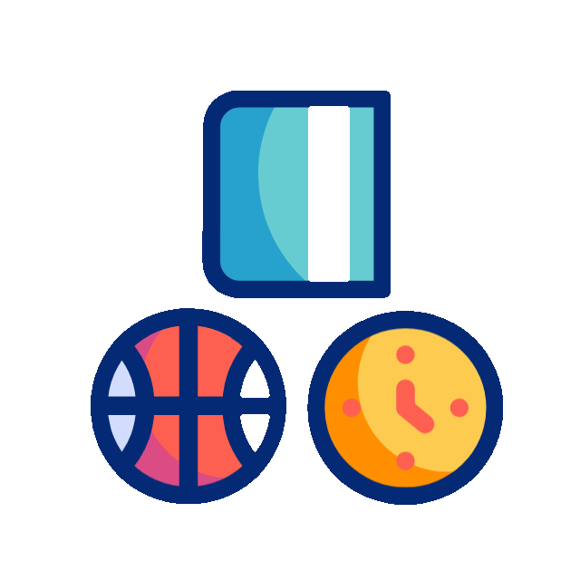

Fantastic Achievement
3.8 in CIS & Cumulative 3.7 GPA, Active Extracullicular
Characteristic
Passionate, Self-discipline, Autodidact
STRENGTHS
 Hello, World!
Hello, World!

Hoi James here, an aspiring Computer Scientist.
Whom loves building software that turns ideas into real-world solutions.
My toolkit? My Experience, Attitude, and a Relentless Drive for professional growth.
Data Scientist/
Software Engineer in the making: I thrive on transforming messy data into clear, impactful insights. With a rock-solid CS foundation and a passion for problem-solving, I turn narratives into coding and ideas into action.
↓ Scroll more
How it started...
It all clicked when I wrote my first C# script for the classic snake game, hooked me forever. Now, I'm obsessed with staying ahead in data science's fast-growing landscape or developing technology, one algorithm at a time. More ↓

Beyond the Code...
When I'm not debugging life:
• Tinkering with new technology,
• Traveling to broaden one's perspective,
•  Sports & gaming for that adrenaline,
Sports & gaming for that adrenaline,
• Sci-fi novels on a mind-bending escapes.
•  Personal Growth interacting with people.
Personal Growth interacting with people.
Switch for Education →
📚 EDUCATION
🎓Washburn University
B.Sc. Computer Information Science | Data Science Concentration
▲3.72 GPA | Leadership: BytesBods(Treasurer), International Club(Peer), Peer Educator(International Student), Campus Ministry(Student Leader)
🔄Allen Comm. College
Credit transfer toward degree requirements
🌏Sampoerna University
B.Sc. Computer Science
▲3.7 GPA | Activities: GDSC, Archery, Japanese Club, Investor Club
🔄Broward College
🔄Univ. of Arizona
🏫Jakarta National HS#2
▲3.0 GPA | Natural Science Track | KIR, OSN, German Club
✏️ Bunda Mulia Schools
▲ Middle School: Mandarin & English Proficiency
▲ Primary(Tarsisius 1 School): ComputerKID Robotics Cert.
▲ Kindergarten: English & Mandarin & Swimming
📌 REFERENCES
Nan Sun
ProfessionalChair of Computer Information Science, Washburn University
Joseph Kendall-Morwick
ProfessionalAssistant Professor of CIS, Washburn University
George Frazier
ProfessionalAssistant Professor of CIS, Washburn University
Akhadian Harnowo
PersonalAssociate Professor of Production & Operations Management, School of Business
Heidi Staerkel
PersonalAssociate Director of International Programs for Student Services
PROJECTS
HabitGuard

Android app developed through Android Studio, marking my transition into mobile development. This project helped me:
(Click the icon for more)
Learning Milestones: Android Studio • Kotlin • Firebase Auth/Firestore DB • UI Design
Wearable's UI/UX on Mental Health

Peer-reviewed publication exploring how wearable UI/UX design can address mental health challenges in tech. Key contributions:
(Click the icon for more)
Learning Milestones: Research Procedure • Peer Review • UI/UX Design • Mental Health • Survey Analysis
Epidemiological Spread Simulation

Developed a dynamic infection spread data model demonstrating:
(Click the icon for more)
Learning Milestones: Big Data • Live Data • Visual Basic • Automation
Handedness Classification

Designed and implemented a convolutional neural network to analyze hand dominance from image data:
(Click the icon for more)
Learning Milestones: Data Mining • Image Processing • Convolutional Neural Networks • TensorFlow • Python
Sandbox Malware Analysis

Conducted comprehensive malware analysis using Cuckoo Sandbox environment:
Learning Milestones: Cuckoo Sandbox • Wireshark • YARA • Volatility • CompTIA Security+
Movie System

Designed and implemented a comprehensive movie database system to manage and query film data effectively:
Learning Milestones: PostgreSQL • pgAdmin • Python (psycopg2) • ERD Design
AI Pathfinding

Developed an interactive simulator comparing pathfinding algorithms:
(Click the icon for more)
Learning Milestones: Python • PyGame • NumPy • Matplotlib (for analytics)
Cross Data Recovery

Researched data recovery techniques for multiple operating systems:
Learning Milestones: Autopsy • FTK Imager • ddrescue • Hex Editors • Write-blockers
RESTful API Service

Designed and implemented a scalable web API service with full lifecycle management:
Learning Milestones: Node.js • OpenAPI • Postman • JWT • SQLite
In Working Progress
Build a locally hosted AI companion that securely manages PI, learns from user activity, and provides intelligent assistance.
Learning Milestones: Local LLM deployment • Retrieval-Augmented Generation (RAG) • Mobile development • Vector databases • Personal knowledge management • AI agents • Explainable AI • Secure local storage • Pattern recognition
In Working Progress
A research-driven language learning platform exploring multilingual knowledge representation, language acquisition, and human-AI interaction, serving as a foundation for future multilingual LLM applications.
Learning Milestones: Second Language Acquisition • Linguistics • Computational Linguistics • Natural Language Processing • Transformer Architectures • Tokenization • Embeddings • Vector Search • Retrieval-Augmented Generation (RAG) • Multilingual LLMs • Knowledge Representation
In Working Progress
Build an AI-powered research platform that continuously discovers, verifies, and summarizes information from online sources into organized, up-to-date knowledge repositories.
Learning Milestones: AI agents • Web search • Retrieval-Augmented Generation (RAG) • Information retrieval • Knowledge graphs • Data pipelines • Source verification • Web scraping • APIs • Summarization • Research automation
Professional Experience & Services
Work Experience →
Athletic Events Operations Staff
Key contributor to smooth execution of NCAA Division II athletic events serving 500+ attendees:
Learning Milestones: High-pressure environment management • Attention to detail • Team coordination • Customer service excellence
Department Assistant & CIS Tutor
Dual-role position combining administrative support and technical assistance for the Computer Science department:
Learning Milestones: Technical communication • Problem-solving • Database navigation • Academic workflow understanding
Student Development Officer
Supported the Alumni Association and Foundation in fostering alumni and donor engagement through outreach, fundraising calls, and confidential data management, while assisting with administrative and event-related initiatives.
Learning Milestones: Alumni Relations • Fundraising Communication • CRM Data Management • Event Coordination
Peer Educator for International Students
Served as a Peer Educator supporting international students by providing guidance during their transition to campus life, fostering academic and social success, and promoting global awareness within the university community:
Learning Milestones: Cross-cultural communication • Student mentorship • Program coordination • Global awareness promotion
International Summer Institute Program Assistant
Key contributor to a 6-week international academic program serving 15+ participants from Japan:
Learning Milestones: Intercultural Communication • Event Planning • Crisis Management • Multilingual Coordination
Mathematics Instructional Specialist
🏆 "Best Dedication" Award for teaching excellence Delivered advanced mathematics instruction with measurable results:
Learning Milestones: Analytical problem-solving • Technical documentation • Data-driven instruction • Mathematical modeling
← Services
Multicultural Community Volunteer
Contributed 500+ service hours across diverse communities, developing cross-cultural competencies:
Outreach: Topeka First Southern Baptist • Denver Hope Valley • NYC Graffiti 2 • KC City Union Mission • Philadelphia Square One • NYC Revival Life • Scranton Green Ridge
Skills: Cross-cultural communication • Adaptability • Leadership • Community needs analysis
Retail Operations Volunteer
Skills: Inventory Management • POS Systems • Sales Analytics
Digital Shelf Labeling Associate
Skills: Equipment Handling • Dexterity • Team Training
Hospitality Support Volunteer
Skills: Event Operations • Customer Service • Team Training
Community Outreach Volunteer
Skills: Crisis Communication • Resource Coordination • Cultural Sensitivity